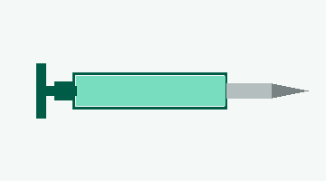

Asistente por edad
Calcula lo que corresponde según el calendario sistemático de Andalucía 2026. Marca lo que ya está documentado para ver lo que falta por revisar.

Escribe una fecha de nacimiento y pulsa Calcular.
Grupos de edad
Toca un grupo y verás las vacunas del calendario andaluz 2026 para esa edad.
Línea de vida
Del nacimiento a los 65 años y más. El punto naranja marca el hito más cercano a la edad que hayas calculado.
Campaña 2026-27: gripe y COVID-19
Instrucción SGSPPS-3/2026 (24 de septiembre de 2026). Inicio el 1 de octubre. El estado se calcula con la fecha de hoy.
Novedades de la campaña
- Efluelda (alta carga) de forma sistemática desde los 75 años.
- Fluad (adyuvada) en los grupos de riesgo de la instrucción.
- Vacunas de gripe trivalentes, con las tres cepas actualizadas.
- Sin vacuna COVID de 3 microgramos: 10 microgramos en niños de 6 meses a 11 años de muy alto riesgo.
Cómo se pide cita
- ClicSalud+, App Salud Andalucía, Salud Responde (955 545 060) o centro de salud.
- Niños de 3 y 4 años: Fluenz intranasal, preferentemente en el colegio.
- Jornadas sin cita los miércoles desde el 11 de noviembre de 2026, según disponibilidad.
Virus respiratorio sincitial (VRS)
Lactantes: nirsevimab 2026-27
Una dosis a los nacidos entre el 1 de abril de 2026 y el 31 de marzo de 2027 (SGSPPS-1/2026).
- Grupo 1A (1 abril a 30 septiembre 2026): en su centro de Atención Primaria desde el 21 de septiembre.
- Grupo 1B (1 octubre 2026 a 31 marzo 2027): lo antes posible tras nacer, en la maternidad. Si nacen en centro privado, acto único sin cita en su centro de salud.
- Los nacidos a finales de marzo de 2027 pueden inmunizarse hasta el 9 de abril de 2027.
Documento: instrucción SGSPPS-1/2026 en Andavac.
Adultos de riesgo (nuevo 2026-27)
mRESVIA (Moderna). Instrucción SGSPPS-4/2026, 9 de octubre de 2026.
- Grupo 1: 60 años o más en residencias de mayores.
- Grupo 2: 18 años o más con muy alto riesgo (cáncer hematológico, trasplantes, diálisis, errores innatos de inmunidad, VIH avanzado, entre otros).
- Grupo 3: 60 años o más con tratamientos inmunosupresores definidos.
Rescate de dosis y calendarios acelerados
Guía de calendarios acelerados de vacunación en personas con vacunaciones no actualizadas. Andalucía, febrero 2026 (actualización 17/02/2026).
Reglas generales
- Dosis puesta, dosis que cuenta. No se reinicia una pauta si las dosis previas cumplieron la edad y el intervalo mínimos. Se completa aunque se pasara el intervalo recomendado.
- Se calculan las dosis necesarias por edad y se restan las recibidas.
- Solo valen las dosis documentadas por escrito en registros oficiales o carnés. La información verbal no se acepta. Si hay duda razonable, se inicia como no vacunado.
- Se aprovecha cualquier contacto sanitario para revisar el estado vacunal. No hace falta exploración completa previa.
- Se recomienda administrar a la vez todo lo posible, en sitios anatómicos distintos.
Intervalos y validez
- Vacunas atenuadas no puestas el mismo día: separar al menos 28 días, sin periodo de gracia.
- Inactivadas, o atenuada con inactivada: sin intervalo mínimo entre ellas.
- Periodo de gracia: vale una dosis inactivada puesta hasta 4 días antes de la edad o el intervalo mínimo.
- Invalidez: una dosis puesta 5 o más días antes del mínimo no vale y se repite tras el intervalo mínimo desde esa dosis.
- Alcanzado el estado adecuado, conviene seguir con los intervalos habituales.
Abrir la guía completa (PDF, 15 págs.) Contiene las tablas de dosis mínimas e intervalos para menores de 7 años, de 7 a 18 y mayores de 18.
Grupos de riesgo
La instrucción DGSPyOF-1/2026 dedica un capítulo a cada vacuna en personas de riesgo. Dónde mirar:
Neumococo en riesgo de enfermedad invasiva
Herpes zóster en riesgo
Meningococo B y ACWY
VPH, hepatitis A y B, mpox
Mutualistas (MUFACE, MUGEJU, ISFAS)
Reacciones adversas: notificar siempre en NotificaRAM.
Novedades 2026 respecto a 2025
La 2ª dosis pasa de los 3 a los 2 años. En 2026 se vacunan los nacidos en 2024 y 2023.
Rescate hasta los 21 años en chicas y chicos, con una dosis.
Se amplía de 60-76 a 60-80 años (nacidos 1946 a 1966) con VNC20.
Rotarix oral desde febrero de 2026. Rescate de nacidos desde el 1 de octubre de 2025 (menos de 20 semanas para la 1ª dosis).
Refuerzo del rescate a cualquier edad hasta los 65 años y revisión a los 12 y 14 años.
Nirsevimab para nacidos del 1/4/2026 al 31/3/2027. mRESVIA en adultos de riesgo (SGSPPS-4/2026).
Andavac: principales novedades del calendario 2026 · Nuevo calendario 2026
Antequera y Málaga
Información local reciente. La prensa solo da contexto. Lo oficial es el SAS y el distrito.
541 puntos en Andalucía para la población diana de gripe (13/11/2026).
Noticia SAS
Vacunación en el centro comercial de Antequera (SER, 21/11/2026).
Cadena SER
Herramientas y apps de referencia
Otras aplicaciones útiles. Cada una indica su origen. Las no oficiales se marcan.
Calendario por edades, calendarios acelerados, viajes, riesgo, neumococo, gripe y COVID.
Google Play · Noticia (nov. 2025)
Adapta vacunación e inmunización a pacientes de riesgo.
vacunasaep.org
Consulta de calendario por comunidad autónoma y grupos de riesgo.
Noticia SEMERGEN
Asistente web con IA que responde dudas con fuentes de Sanidad, OMS y CDC.
Diario Sanitario
Presentación de las novedades del calendario andaluz.
Andavac
Apoya decidir la pauta antineumocócica.
vacunas.org
Repaso con preguntas
Diez preguntas al azar sobre el calendario 2026. Sirven para repasar, no puntúan en ningún sitio.
Buscar en esta guía
Fuentes
Andavac es la base. Orden: Andalucía primero, luego Ministerio y sociedades científicas. Todas son de 2025 o 2026.